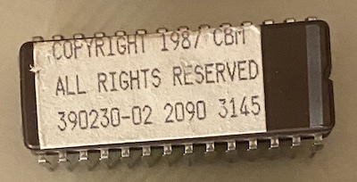

My Willem EEPROM programmer really hates 28cXXX EEPROMs, despite everything I've tried with it. It happily erases any EEPROM I throw in there, even if I just want to dump it, so I finally got around to putting together an Arduino Mega EEPROM programmer. I used the schematic and sketch available at The Oddbloke Geek Blog, just using protoboard, which led to lots of cursing as the only reasonable wire I had around was 30AWG.
My main goal with this is that I keep running into a need for a simple 28cXXX programmer for all sorts of projects, but specifically building an 8-bit ISA High Density Floppy Controller. Burning that image took all of two minutes to do, so I pulled out a box of random ROMs I had kicking around and decided to dump them, and now I'm sharing them with you.
They all seem to be Amiga related, but I'm not really an Amiga person, so I don't know what they are offhand. Some basic searching turned up references to SCSI controllers, so I assume these are some auxilliary ROMs for Amiga hardware. If you know what they are, or even need them, send me an email.
